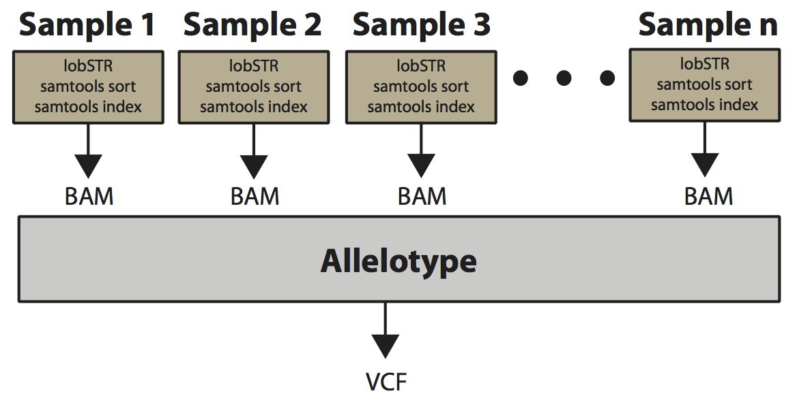

Calling STR genotypes across multiple samples
This page describes how to run lobSTR on multiple samples at once. For more specific use cases or advice on setting specific parameters, see the documentation page.
Overview
The figure below gives an overview of the steps required to run lobSTR on multiple samples. The alignment step (lobSTR) is run separately on each sample separately. Then the resulting sorted and indexed bams are all used as input to a single run of allelotype, which generates a single VCF file containing STR calls across all samples.

Alignment
For multi-sample calling, the alignment (lobSTR) step is called separately on each sample. This step is described in the best practices for whole genome and whole exome sequencing page. Importantly, for multi-sample calling you must set the read group information correctly for each sample. Downstream, the allelotype step knows which reads come from which sample according to the sample annotated in the read group (--rg-sample). Note that if two different lobSTR runs have the same --rg-sample but different --rg-lib specified, they will be treated as coming from the same sample.
The following are example alignment commands assuming you are genotyping 3 samples.
{% highlight bash %}
lobSTR \
--index-prefix hg19_v3.0.1/lobstr_v3.0.1_hg19_ref/lobSTR_ \
-f my_first_sample.fq -q \
--rg-sample my_first_sample --rg-lib my_first_sample \
--out my_first_sample_output
samtools sort my_first_sample_output.aligned.bam my_first_sample_output.sorted
samtools index my_first_sample_output.sorted.bam
lobSTR \
--index-prefix hg19_v3.0.1/lobstr_v3.0.1_hg19_ref/lobSTR_ \
-f my_second_sample.fq -q \
--rg-sample my_second_sample --rg-lib my_second_sample \
--out my_second_sample_output
samtools sort my_second_sample_output.aligned.bam my_second_sample_output.sorted
samtools index my_second_sample_output.sorted.bam
lobSTR \
--index-prefix hg19_v3.0.1/lobstr_v3.0.1_hg19_ref/lobSTR_ \
-f my_third_sample.fq -q \
--rg-sample my_third_sample --rg-lib my_third_sample \
--out my_third_sample_output
samtools sort my_third_sample_output.aligned.bam my_third_sample_output.sorted
samtools index my_third_sample_output.sorted.bam
{% endhighlight %}
Allelotype
The allelotype step takes in bams from one or more samples generated in the alignment step. It calls STR genotypes across all samples at once to improve calling accuracy (see how it works below). The output is a single VCF file with STR genotypes across all samples.
Running allelotype on multiple samples
{% highlight bash %}
allelotype \
--command classify \
--bam my_first_sample_output.sorted.bam,my_second_sample_output.sorted.bam,my_third_sample_output.sorted.bam \
--index-prefix hg19_v3.0.1/lobstr_v3.0.1_hg19_ref/lobSTR_ \
--strinfo hg19_v3.0.1/lobstr_v3.0.1_hg19_strinfo.tab \
--noise_model models/illumina_v3.pcrfree \
--out my_output
{% endhighlight %}
This will create the output my_output.vcf and my_output.allelotype.stats The format of the VCF output is described on the file formats page. The output of the stats file is described here.
How multi-sample calling works
Multi-sample calling calls STR genotypes at one locus at a time. For each locus, it reads in all sequence reads that lobSTR aligned to the locus to ascertain all alleles for which there is any evidence. Once all alleles are ascertained, allelotype calculates the maximum likelihood genotype for each sample by scoring all pairs of possible alleles using a model of noise expected at STR loci.
A big advantage of using multi-sample calling for STR genotypes is that STRs are highly multi-allelic, and unlike SNPs, we do not know before hand which alleles we will see in the sample. Therefore, if you were to run allelotype separately on each sample, the resulting VCF files would have different alternate allele annotations and you would not be able to easily merge VCFs across callsets.
Additional tips
- To make allelotype faster, you can run it separately on each chromosome and analyze multiple chromosomes in parallele. Use the argument
--chrom chr1 for example to only analyze chromosome 1.
Tips on setting allelotype parameters can be found here.
Next steps
Now with a list of STR variant calls, you might be interested in:
See the documentation page for more details.